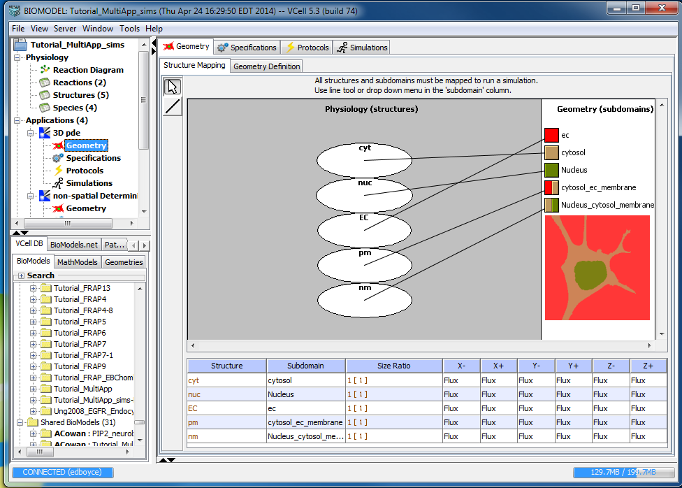

Structure Mapping defines the relationship between the physiology (Compartments/Structures) and the geometry (Domains). The mapping provides information to simulation solvers that identifies a physiology structure at every point in space.

From a selected application click on "Geometry and click the "Structure Mapping" tab. The left panel depicts the "physiology (structures)", the right depicts the "Geometry (subdomains)" and the bottom displays a table of the structure mapping assignments.
Compartmental (non-spatial) BioModel structure mapping. (See Non-Spatial Mapping for non-spatial geometry mapping)
Spatial BioModel structure mapping
Spatial BioModel structure mappings are defined by the user within an "Application" after all physiology compartments and a spatial geometry have been added.
Choose one of the methods below to map each physiology structure to the appropriate geometry subdomain:
For applications with SPATIAL geometries the "Structure Mapping" table allows the user to enter boundary conditions to be used ONLY when the structure intersects the edge of the simulation world (i.e. the entire simulation domain). Note that for structures mapped to a spatial geometry domain that do not intersect the edge of the simulation world, this setting will have no effect. In the "Structure Mapping" table each (-X,+X,-Y,+Y,-Z,+Z) column associated with a structure represents an edge of the simulation world, where "-X" represents the edge of the simulation world in the minus X direction and the other columns have similar meaning for the indicated axis (XYZ) and direction (-+).
Set boundary conditions to either "FLUX" or "VALUE" by selecting from the pull down menu in the appropriate column (-X,+X,-Y,+Y,-Z,+Z) for each structure/subdomain mapping.